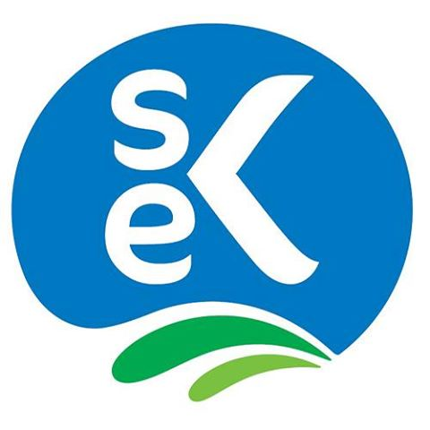
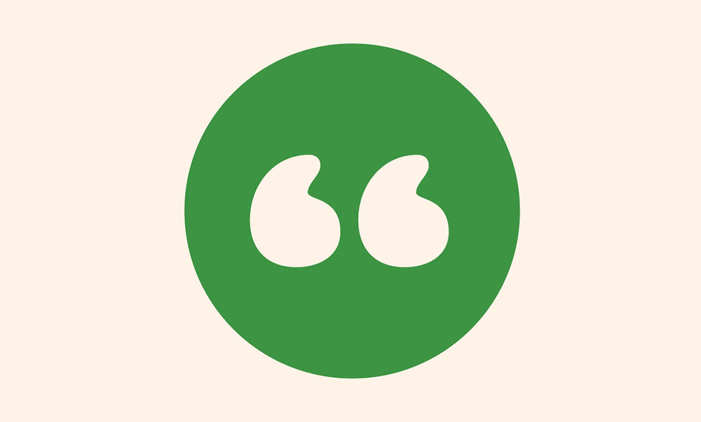

Вакансии
Вакансии
В этом разделе HR Альфа банка видит вакансии, в которых нуждаются предприниматели и начинает искать кандитата. Проблему поиска кандидата мы в данном макете не рассматриваем.

Менеджер по привлечению клиентов
Полная занятость
ООО Containa
Google Analytics • Яндекс директ • Интернет маркетинг • Google adwords • Повышение конверсии • Разработка бизнес-стратегии • Стратегические коммуникации • Продуктовый маркетинговые
Поиск и внешнее привлечение массово-премиального сегмента с помощью различных каналов. Выезды на территорию клиента. Выполнение плана продаж по банковским продуктам, финансовое консультирование клиентов...
 Senior Python Developer
Senior Python Developer
Удалённая работа
Technicio
Python • Linux • MySQL • PostgreSQL • MongoDB • Высоконагруженные системы
Technicio – это сервис, который позволяет быстро находить надежных исполнителей для решения любых задач. YouDo – это более 1,5 млн зарегистрированных пользователей, более 140 тысяч исполнителей, которые зарабатывают на сервисе, помогая заказчикам решать их проблемы...

Front-end разработчик
Единичный заказ
Васичкин и Ко
HTML • CSS • JQuery • Адаптивная верстка • БЭМ • Gulp • Stylus • Git • Svg
Нужно добавить подготовленные изменения в готовый сайт. Нужно в коде изменить данные на уже подготовленный материал, немного изменить дизайн на основе уже готового сайта и добавить пару страниц.